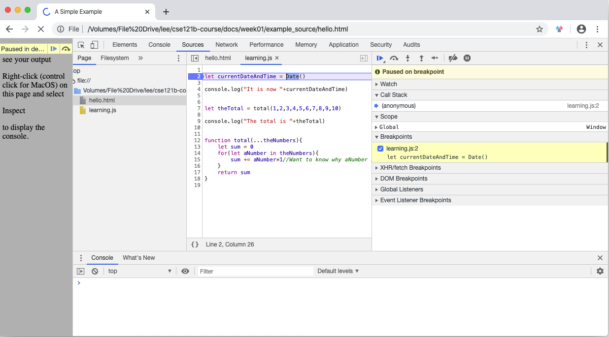

Your Task
VS Code
Visual Studio Code has a lot to offer to help developers be more efficient in their work. It is worth spending some time to learn what it can do for you! Hopefully you spent some time with the resources in the Installation and Purpose reading. To continue review the following resources:
- Watch at least the first 2 videos of VS Code: Intro videos.
- ...then read VS Code: Basic editing.
Extensions
Most good editors allow for customization by it's users. VS Code is no exception. Programmers can extend the functionality of the editor by creating Extensions. There are a few that you should install right now.
They are installed through the editor itself. If you are unsure how to install an extension visit this link to the instructions on the VS Code site or watch the third video in the link above.
- Required: Live Server by Ritwick Dey -- Launches your pages in the browser for preview with live reload. (Automatically refreshes the page in the browser when you save your changes in VS Code)
- Optional: Beautify -- Formats your code to keep it more readable.
After installing the Live Server extension, you may need to do a small amount of configuration. If Chrome is not set as your system default browser, we can set Live Server to use it anyway. Do the following to set a custom browser for Live Server to use:
- Click on the Gear icon in the bottom left corner of the VS Code application window, then select 'Settings'.
- In the Search settings box at the top of the new tab that opened type "custom browser"
- Find the setting "Live Server > Settings: Custom Browser". In the drop down below that select "Chrome"
Note!
Most IDE's rely on the concept of a project to get the full benefit of their features. VS Code is no exception. If you do not have a project open in VS Code some extensions (including Live Server) will not work consistently. Opening a project in VS Code is as simple as opening the folder that the code you are working on is in. If the status bar at the bottom of the editor is purple, then you do NOT have a project folder open. You are just working on unrelated files. If the status bar is blue you have a project folder open. You should almost always be working in a project folder.
Create a folder on your computer to contain the files for this course. Then open that folder in VS Code.
If you have other courses that are using VS Code then you should do the same: create a folder to hold your work, then switch the open project folder for each class. You might find the Project Manager extension helpful for this. (Or for any project that you have previously opened you can quickly switch back with File->Open Recent)
Chrome and debugging
Google Chrome, the web browser you will be using in this course, contains a set of very helpful developer tools. This task doesn't cover using all of them. Instead it focuses on the built-in stepwise debugger.
To start with, download the files we'll play with to help you learn how to use the stepwise debugger. Once you've got the zip file downloaded, unzip it.
To accomplish this task, you will need this browser window open with the instructions showing and another open showing the index.html file in the zip file. Set up these two windows side-by-side so you can see them both at once. The next step is to load the index.html file into the second Chrome browser window. Do this by launching Chrome and then drag the index.html file onto the second window. With this done, right click, or control-click for MacOS users, on the window and select 'Inspect'. This will open the developer tools (There are other ways to launch the tools if you are interested). With the developer tools open, look for and select the 'Sources' tab. You should find it at the top of the developer tools window.
The example you are going to mess with consists of two files, index.html and learning.js. Following industry standard practice, all the JavaScript for this example is found in the learning.js file. Select learning.js from the left-hand view and the learn.js code will appear in the middle view.
In the middle view, you will see a column of numbers indicating the line numbers for each line of the code. This column is called 'the gutter'. Now click on the 2. You will see a blue indicator show up in the gutter. This indicator is showing you where a 'break point' has just been set in the code. Breakpoints are how you temporarily pause the code's execution so you can see what is actually going on in the code rather than what you think might be going on. You are now ready to use Chrome's built-in stepwise debugger.
The code for this page is designed to run each time the page is loaded, so refresh the page
What you now see is a bounded blue selection including all of the code for line 2. At this point in time, line 2 has not executed. Let's make it execute. In the right-had view of the debugging tools, you will see a dot with a bent arrow over it. It looks kind of like an eye with an eyebrow. When you move your mouse over it, without clicking, a help message pops up letting you know this is the 'step over' button. Each time you click this button, the highlighted line of code executes. Let's give it a go. Click the step over button.
The first thing you'll notice is that the highlighter has moved to the next line of code. Now you know the browser is waiting to extecute that line. Now move your mouse over 'let currentDateAndTime'. As you do, it gets a yellow highlight and the value of this variable is displayed. Handy!! now you don't have to guess what the value is. If you look in the right-hand view, in the Scope/Script pulldown, you will also see this same variable and its value. You can use which ever way you like to keep track of the values of any variable you create in your code.
Click the step over button again. Now line 4 has executed. In the console tab at the bottom of the developer tools you now see "It is now " followed by the current date and time. When you use console.log to print out values of your variables, you are using what in programming speak is called a debug statement. Whether you choose to use a debug statement or the stepwise debugger is situationally dependent. Your instructor, and your own experience, can help you decide when it is best to use which one.
The debugger is now 'stopped' on line 7. Line 7 is different. While you will learn much more about this later, what you see in line 7 is a call to a JavaScript function that returns a value. That value is stored in the 'theTotal' variable. Now...if you were to (please don't) click the step over button again, you would then see the sum of the numbers 1 through 10 in the theTotal variable, but we are going to do something much more interesting.
Next to the step over button, there is another button. This one is a dot with an arrow pointing down to it. Move your mouse over it and a help message pops up letting you know that this is the 'step into' button. Go ahead and click it.
Wow! The highlighted line of code jumped to line 13! That's because, in programmer speak, you stepped into, instead of over, the total JavaScript function. Now, as you click the step over button, you can watch the value of each number in theNumbers get added to the sum.
Eventually, the numbers have all been added to the sum and the debugger is on line 17. Move your mouse over sum or find it in the right-hand view and you will find the total is 45. It is important to realize you know this BEFORE the function returns the value.
Click step over again, and the hightlighted code moves back to line 9, the next line of code to be executed after line 7. Click step over one more time and the result of the calculation is printed to the console using JavaScript's Built In Function(BIF), console.log.
Noobs and pro's all use the stepwise debugger. When you code is acting up it lets you see EXACTLY what your code is doing instead of thinking you know what it is doing. Rule number one of debugging your code is "Never assume you know what your code is doing." If you follow this rule and use the stepwise debugger, you code debugging time will drop dramatically.
Play around with this a little bit. Change the numbers being passed to the total function and see what happens.